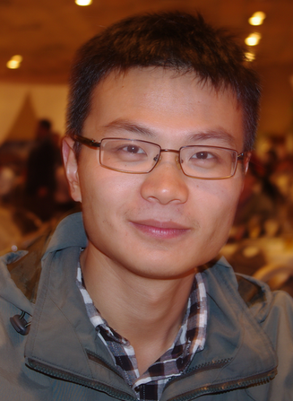

Lin Ma
Huawei Noah's Ark Lab,
Shatin, Hong Kong
Address:Units 525-530, Core Building 2,
Hong Kong Science Park,
Shatin, Hong Kong
Phone: +852 6849-7438
Email:forest.linma@gmail.com
Homepage: http://www.ee.cuhk.edu.hk/~lma/
NEWS
| Apr. 6, 2016 | Project page of our Pattern Recognition paper "Learning Structure of Stereoscopic Image for No-Reference Quality Assessment with Convolutional Neural Network" is released. Please check the link HERE. |
| Feb. 1, 2016 | One coauthored paper "Learning Structure of Stereoscopic Image for No-Reference Quality Assessment with Convolutional Neural Network" is accepted by Elsevier PR. |
| Jan. 26, 2016 | One coauthored paper "Free-energy Principle Inspired Video Quality Metric and Its Use in Video Coding" is accepted by IEEE T-MM. |
| Jan. 17, 2016 | One coauthored paper "Multi-task Rank Learning for Image Quality Assessment" is accepted by IEEE T-CSVT. |
| Dec. 17, 2015 | Our work on "Multimodal Convolutional Neural Networks for Matching Image and Sentence" is reported by CSDN. Please check the link HERE. |
| Dec. 1, 2015 | Our work on "Multimodal Convolutional Neural Networks for Matching Image and Sentence" is reported by Heuritech. Please check the link HERE. |
| Nov. 24, 2015 | Project page of our AAAI 2016 paper "Learning to Answer Questions From Image Using Convolutional Neural Network" is released. Please check the link HERE. |
| Nov. 17, 2015 | Project page of our ICCV 2015 paper "Multimodal Convolutional Neural Networks for Matching Image and Sentence" is released. Please check the link HERE. |
| Nov. 13, 2015 | Our paper "Learning to Answer Questions From Image Using Convolutional Neural Network" has been accepted by AAAI 2016. |
| Nov. 3, 2015 | The short version of our ICCV 2015 paper "Multimodal Convolutional Neural Networks for Matching Image and Sentence" is accepted by the Multimodal Machine Learning Workshop on NIPS 2015. Please check the link HERE. |
BIOGRAPHY
Lin Ma is now a Researcher at Huawei Noah's Ark Lab, Hong Kong. His current research interests lie in the areas of deep learning and multimodal learning, specifically for image and language. His Ph.D. research topics are image/video processing and quality tuning. He received his Ph.D. degree in Department of Electronic Engineering at the Chinese University of Hong Kong (CUHK) in 2013. He received the B. E., and M. E. degrees from Harbin Institute of Technology, Harbin, China, in 2006 and 2008, respectively, both in computer science. He was a Research Intern in Microsoft Research Asia from Oct. 2007 to Mar. 2008. He was a Research Assistant with the Department of Electronic Engineering, CUHK, from Nov. 2008 to Jul. 2009. He was a Visiting Student with the School of Computer Engineering, Nanyang Technological University (NTU), from Jul. 2011 to Sep. 2011. He got the best paper award in Pacific-Rim Conference on Multimedia (PCM) 2008. He was awarded the Microsoft Research Asia fellowship in 2011. He was a finalist to HKIS young scientist award in engineering science in 2012.
EXPERIENCE
| Aug. 2013 - Present | Researcher, Huawei Noah's Ark Lab, Hong Kong, China |
| Jul. 2011 - Sep. 2011 | Visiting Student, School of Computer Engineering, Nanyang Technological University (NTU), Singapore |
| Nov. 2008 - Jul. 2009 | Research Assistant, Department of Electronic Engineering, The Chinese University of Hong Kong (CUHK), Hong Kong, China |
| Oct. 2007 - Mar. 2008 | Research Intern, Internet Media Group, Microsoft Research Asia (MSRA), Beijing, China |
ACADEMIC QUALIFICATIONS
| Aug. 2009 - Dec. 2013 | Ph.D. Degree | in Electronic Engineering | The Chinese University of Hong Kong, Hong Kong, China |
| Sep. 2006 - Jul. 2008 | M.E. Degree | in Computer Science | Harbin Institute of Technology, Harbin, China |
| Sep. 2002 - Jul. 2006 | B.E. Degree | in Computer Science | Harbin Institute of Technology, Harbin, China |
THESES
| 1 | "Perceptual Quality Assessment and Processing for Visual Signals", Ph.D. Thesis, The Chinese University of Hong Kong, Jan. 2013. |
| 2 | "Research on Learning-Based Low-Level Vision Problem", Master Thesis, Harbin Institute of Technology, Jul. 2008. Thesis Supervisor: Prof. Wen Gao. |
PUBLICATIONS
BOOKS
| 1 | Chenwei Deng, Lin Ma, Weisi Lin, and King Ngi Ngan, "Visual Signal Quality Assessment - Quality of Experience (QoE)", Springer, ISBN: 978-3-319-10367-9, 303 pages, Nov. 2014. [Full Text] |
BOOK CHAPTERS
| 1 | Lin Ma, Chenwei Deng, Weisi Lin, King Ngi Ngan, and Long Xu, "Retargeted Image Quality Assessment: Current Progresses and Future Trends", in Visual Signal Quality Assessment - Quality of Experience (QoE), Springer, ISBN: 978-3-319-10367-9, pp. 213-242, Nov. 2014. [Full Text] |
| 2 | Chenwei Deng, Shuigen Wang, and Lin Ma, "Conclusions and Perspectives", in Visual Signal Quality Assessment - Quality of Experience (QoE), Springer, ISBN: 978-3-319-10367-9, pp. 287-302, Nov. 2014. [Full Text] |
JOURNAL PAPERs
| 1 | Wei Zhang, Chenfei Qu, Lin Ma, Jingwei Guan, and Rui Huang, "Learning Structure of Stereoscopic Image for No-Reference Quality Assessment with Convolutional Neural Network", Pattern Recognition. [Accepted] [Preprint] [Project Homepage]. |
| 2 | Long Xu, Weisi Lin, Lin Ma, Yongbing Zhang, Yuming Fang, King Ngi Ngan, Songnan Li, and Yihua Yan, "Free-energy Principle Inspired Video Quality Metric and Its Use in Video Coding", IEEE Transaction on Multimedia, vol. 18, no. 4, pp. 590-602, Apr. 2016. [Full Text]. |
| 3 | Long Xu, Jia Li, Weisi Lin, Yongbing Zhang, Lin Ma, Yuming Fang, and Yihua Yan, "Multi-task Rank Learning for Image Quality Assessment", IEEE Transactions on Circuits and Systems for Video Technology. [Accepted] [Preprint]. |
| 4 | Lin Ma, Xu Wang, Qiong Liu, and King Ngi Ngan, "Reorganized DCT-based Image Representation for Reduced Reference Stereoscopic Image Quality Assessment", Neurocomputing. [Accepted]. |
| 5 | Wei Zhang, Youmei Zhang, Lin Ma, Jingwei Guan, and Shijie Gong, "Multimodal Learning For Facial Expression Recognition", Pattern Recognition, vol. 48, no. 10, pp. 3191-3202, Oct. 2015. [Full Text]. |
| 6 | Zhuo Chen, Lin Ma, Long Xu, Chengming Tan, and Yihua Yan, "Imaging and Representation Learning of Solar Radio Spectrums for Classification", Multimedia Tools and Applications. [Accepted] [Full Text]. |
| 7 | Lin Ma, Songnan Li, and King Ngi Ngan, "Reduced-Reference Image Quality Assessment in Reorganized DCT Domain", Signal Processing: Image Communication, vol. 28, no. 8, pp. 884-902, Aug. 2013. [Full Text]. |
| 8 | Yaqing Niu, Matthew Kyan, Lin Ma, Azeddine Beghdadi, and Sridhar Krishnan, "Visual Saliency's Modulatory Effect on Just Noticeable Distortion Profile and Its Application in Image Watermarking", Signal Processing: Image Communication, vol. 28, no. 8, pp. 917-928, Aug. 2013. [Full Text].
|
| 9 | Long Xu, Songnan Li, King Ngi Ngan, and Lin Ma, "Consistent Visual Quality Control in Video Coding", IEEE Transactions on Circuits and Systems for Video Technology, vol. 23, no. 6, pp. 975-989, Jun. 2013. [Full Text] |
| 10 | Lin Ma, Chenwei Deng, King Ngi Ngan, and Weisi Lin, "Recent Advances and Challenges of Visual Signal Quality Assessment", China Communications, vol. 10, no. 5, pp. 62-78, 2013. [Full Text] |
| 11 | Songnan Li, Lin Ma, and King Ngi Ngan, "Anaglyph Image Generation by Matching Color Appearance Attributes", Signal Processing: Image Communication, vol. 28, no. 6, pp. 597-607, Jul. 2013. [Full Text] |
| 12 | Lin Ma, Weisi Lin, Chenwei Deng, and King Ngi Ngan, "Image Retargeting Quality Assessment: A Study of Subjective Scores and Objective Metrics", IEEE Journal of Selected Topics in Signal Processing, vol. 6, no. 6, pp. 626-639, Oct. 2012. [Full Text ] [Project Homepage] . |
| 13 | Lin Ma, Songnan Li, and King Ngi Ngan, "Reduced-Reference Video Quality Assessment of Compressed Video Sequences", IEEE Transactions on Circuits and Systems for Video Technology, vol. 22, no. 10, pp. 1441-1456, Oct. 2012. [Full Text] |
| 14 | Songnan Li, Lin Ma, and King Ngi Ngan, "Full-reference Video Quality Assessment by Decoupling Detail Losses and Additive Impairments", IEEE Transactions on Circuits and Systems for Video Technology, vol. 22, no. 7, pp. 1100-1112, Jul. 2012. [Full Text] |
| 15 | Lin Ma, Debin Zhao, and Wen Gao, "Learning-based Image Restoration for Compressed Images", Signal Processing: Image Communication, vol. 27, no. 1, pp. 54-65, Jan. 2012. [Full Text] |
| 16 | Songnan Li, Fan Zhang, Lin Ma, and King Ngi Ngan, "Image Quality Assessment by Separately Evaluating Detail Losses and Additive Impairments", IEEE Transaction on Multimedia, vol. 13, no. 5, pp. 935-949, Oct. 2011. [Full Text] |
| 17 | Lin Ma, Songnan Li, Fan Zhang, and King Ngi Ngan, "Reduced-Reference Image Quality Assessment Using Reorganized DCT-Based Image Representation", IEEE Transaction on Multimedia, vol. 13, no. 4, pp. 824-829, Aug. 2011. [Full Text] |
| 18 | Fan Zhang, Lin Ma, Songnan Li, and King Ngi Ngan, "Practical Image Quality Metric Applied to Image Coding", IEEE Transaction on Multimedia, vol. 13, no. 4, pp. 615-624, Aug. 2011. [Full Text] [Experimental Results] |
| 19 | Lin Ma, King Ngi Ngan, Fan Zhang, and Songnan Li, "Adaptive Block-Size Transform Based Just-Noticeable Difference Model for Images/Videos", Signal Processing: Image Communication, vol. 26, no. 3, pp. 162-174, Mar. 2011. [Full Text] [Experimental Results] |
| 20 | Lin Ma, Songnan Li, and King Ngi Ngan, "Visual Horizontal Effect for Image Quality Assessment", IEEE Signal Processing Letters, vol. 17, no. 7, pp. 627-630, Jul. 2010. [Full Text]
|
CONFERENCE PAPERS
| 1 | Lin Ma, Zhengdong Lu, and Hang Li, "Learning to Answer Questions From Image Using Convolutional Neural Network", The 30th AAAI Conference on Artificial Intelligence (AAAI 2016), Phoenix, Arizona, USA, Feb. 12-17, 2016. [Oral Presentation] [Full Text] [arXiv Link][Project Homepage] |
| 2 | Lin Ma, Zhengdong Lu, Lifeng Shang, and Hang Li, "Multimodal Convolutional Neural Networks for Matching Image and Sentence", International Conference on Computer Vision (ICCV 2015), Santiago, Chile, Dec. 11-18, 2015. [Poster Presentation] [Full Text] [arXiv Link] [Project Homepage] |
| 3 | Qian Zhang, Lin Ma, Fan Zhang, and Long Xu, "A Packet-Layer Model with Content Characteristics for Video Quality Assessment of IPTV", Pacific-Rim Conference on Multimedia (PCM 2015), Gwangju, Korea, Sep. 16-18, 2015. [Poster Presentation] [Full Text] |
| 4 | Long Xu, Lin Ma, Zhuo Chen, Yihua Yan, and Jinjian Wu, "Perceptual Quality Improvement for Synthesis Imaging of Chinese Spectral Radiohelograph", Pacific-Rim Conference on Multimedia (PCM 2015), Gwangju, Korea, Sep. 16-18, 2015. [Poster Presentation] [Full Text] |
| 5 | Lin Ma, Long Xu, Yichi Zhang, King Ngi Ngan, Yihua Yan, "Rank Learning Based No-Reference Quality Assessment of Retargeted Images", IEEE International Conference on Systems, Man, and Cybernetics (SMC 2015), Hong Kong, Oct. 9-12, 2015. [Oral Presentation] [Full Text] |
| 6 | Zhuo Chen, Lin Ma, Long Xu, Yihua Yan, "Multimodal Learning for Classification of Solar Radio Spectrum", IEEE International Conference on Systems, Man, and Cybernetics (SMC 2015), Hong Kong, Oct. 9-12, 2015. [Oral Presentation] [Full Text] |
| 7 | Long Xu, Jia Li, Weisi Lin, Yongbing Zhang, Lin Ma, Yuming Fang, Yun Zhang, and Yihua Yan, "Multi-task Rank Learning for Image Quality Assessment", IEEE International Conference on Acoustics, Speech and Signal Processing (ICASSP 2015), Brisban, Australia, Apr. 19-24, 2015. [Oral Presentation] [Full Text] |
| 8 | Lin Ma, Long Xu, Huanqiang Zeng, King Ngi Ngan, and Chenwei Deng, "How Does the Shape Descriptor Measure the Perceptual Quality of the Retargeted Image?" IEEE International Conference on Multimedia and Expo (ICME 2014) Workshop on Emerging Multimedia Systems and Applications, Chengdu, Sichuan, China, Jul. 14-18, 2014. [Oral Presentation] [Full Text] |
| 9 | Long Xu, Lin Ma, King Ngi Ngan, Weisi Lin, and Ying Weng, "Visual Quality Metric for Perceptual Video Coding", IEEE Visual Communications and Image Processing (VCIP 2013), Charming City of Kuching, Sarawak, Malaysia, Nov. 17-20, 2013. [Poster Presentation] [Full Text] |
| 10 | Qian Zhang, Fan Zhang, and Lin Ma, "Packet-layer Model for Quality Assessment of Encrypted Video in IPTV Services", Asia Pacific Signal and Information Processing Association Annual Summit and Conference (APSIPA ASC 2013), Kaohsiung, Taiwan, Oct. 29 - Nov. 1, 2013. [Oral Presentation] [Full Text] |
| 11 | Lin Ma, Long Xu, Qian Zhang, and King Ngi Ngan, "High Quality Image Construction from Multiple Low Quality Copies", International Workshop on Multimedia Signal Processing (MMSP 2013), Pula (Sardinia), Italy, Sep. 30-Oct. 2, 2013. [Poster Presentation] [Full Text] |
| 12 | Lin Ma, King Ngi Ngan, and Long Xu, "Reduced Reference Video Quality Assessment Based on Spatial HVS Mutual Masking and Temporal Motion Estimation", IEEE International Conference on Multimedia and Expo (ICME 2013) in Multimedia for Humanity Theme Track, San Jose, California, USA, Jul. 15-19, 2013. [Poster Presentation] [Full Text] |
| 13 | Lin Ma, Chenwei Deng, Weisi Lin, and King Ngi Ngan, "Overview of Quality Assessment for Visual Signals and Newly Emerged Trends", International Symposium on Circuits and Systems (ISCAS 2013), Beijing, China, May 19-23, 2013. [Oral Presentation] [Full Text] |
| 14 | Long Xu, King Ngi Ngan, Songnan Li, and Lin Ma, "Video Quality Metric for Consistent Visual Quality Control in Video Coding", Asia Pacific Signal and Information Processing Association Annual Summit and Conference (APSIPA ASC 2012), Hollywood, California, USA, Dec. 3-6, 2012. [Oral Presentation] [Full Text] |
| 15 | Lin Ma, Weisi Lin, Chenwei Deng, and King Ngi Ngan, "Study of Subjective and Objective Quality Assessment of Retargeted Images", International Symposium on Circuits and Systems (ISCAS 2012), Seoul, Korea, May 20-23, 2012. [Oral Presentation] [Full Text] [Project Homepage] |
| 16 | Lin Ma, Songnan Li, and King Ngi Ngan, "Reduced-Reference Image Quality Assessment via Intra- and Inter-Subband Statistical Characteristics in Reorganized DCT Domain", Asia Pacific Signal and Information Processing Association Annual Summit and Conference (APSIPA ASC 2011), Xi'an, China, Oct. 18-21, 2011. [Oral Presentation] [Full Text]. |
| 17 | Songnan Li, Lin Ma, and King Ngi Ngan, "Video Quality Assessment by Decoupling Additive Impairments and Detail losses", International Workshop on Quality of Multimedia Experience(QoMEX 2011), Mechelen, Belgium, Sep. 7-9, 2011. [Poster Presentation] [Full Text] |
| 18 | Yaqing Niu, Matthew Kyan, Lin Ma, Azeddine Beghdadi, and Sridhar Krishnan, "A Visual Saliency Modulated Just Noticeable Distortion Profile for Image Watermarking", European Signal Processing Conference (EUSIPCO 2011), Barcelona, Spain, Aug. 29 - Sep. 2, 2011. [Poster Presentation] [Full Text] |
| 19 | Lin Ma, Songnan Li, and King Ngi Ngan, "Motion Trajectory Based Visual Saliency for Video Quality Assessment", International Conference on Image Processing (ICIP 2011), Brussels, Belgium, Sep. 11-14, 2011. [Poster Presentation] [Full Text] |
| 20 | Lin Ma, Songnan Li, and King Ngi Ngan, "Perceptual Image Compression via Adaptive Block-Based Super-Resolution Directed Down-Sampling", International Symposium on Circuits and Systems (ISCAS 2011), Rio de Janeiro, Brazil, May 15-18, 2011. [Oral Presentation] [Full Text] |
| 21 | Lin Ma, Fan Zhang, Songnan Li, and King Ngi Ngan, "Video Quality Assessment Based on Adaptive Block-Size Transform Just-Noticeable Difference Model", International Conference on Image Processing (ICIP 2010), Hong Kong, China, Sep. 26-29, 2010. [Oral Presentation] [Full Text] |
| 22 | Lin Ma, and King Ngi Ngan, "Adaptive Block-Size Transform Based Just-Noticeable Difference Profile for Videos", International Symposium on Circuits and Systems (ISCAS 2010), Paris, France, May 30 – Jun. 2, 2010. [Poster Presentation] [Full Text] |
| 23 | Lin Ma, and King Ngi Ngan, "Adaptive Block-Size Transform Based Just-Noticeable Difference Profile for Images", Pacific-Rim Conference on Multimedia (PCM 2009), Bangkok, Thailand, Dec. 15-18, 2009. [Oral Presentation] [Full Text] |
| 24 | Lin Ma, Feng Wu, Debin Zhao, Wen Gao, and Siwei Ma, "Learning-based Image Restoration for Compressed Image through Neighboring Embedding", (Best Paper Award) Pacific-Rim Conference on Multimedia (PCM 2008), Tainan, Taiwan, Dec. 9-13, 2008. [Oral Presentation] [Full Text] |
| 25 | Lin Ma, Yonghua Zhang, Yan Lu, Feng Wu, and Debin Zhao, "Three-tiered Network Model for Image Hallucination", International Conference of Image Processing (ICIP 2008), San Diego, California, USA, Oct. 12-15, 2008. [Poster Presentation] [Full Text] |
| 26 | Songnan Li, Lin Ma, Fan Zhang, and King Ngi Ngan, "Temporal Inconsistency Measure for Video Quality Assessment", Picture Coding Symposium (PCS 2010), Nagoya, Japan, Dec. 7-10, 2010. [Poster Presentation] [Full Text] |
| 27 | Fan Zhang, Songnan Li, Lin Ma, and King Ngi Ngan, "Limitation and Challenges of Image Quality Measurement", Visual Communications and Image Processing (VCIP 2010), Huang Shan, Anhui, China, Jul. 11-14, 2010. (Invited Paper) [Oral Presentation] [Full Text] |
| 28 | Shaohui Liu, Lin Ma, Hongxun Yao, and Debin Zhao, "Universal Steganalysis Based on Statistical Models Using Reorganization of Block-based DCT Coefficients", International Conference on Information Assurance and Security (IAS 2009), Xi'an, China, Aug. 18-20, 2009. [Oral Presentation] [Full Text] |
{kind=link}
PATENTS
| 1 | King Ngi Ngan, Lin Ma, Wai Kuen Cham, and Yu Liu, "Method and Apparatus for Video Coding By ABT-based Just Noticeable Difference Model", US Non-Provisional Patent Application No. 12/750,401. Mar. 2010. [Full Text] |
| 2 | King Ngi Ngan, Lin Ma, Wai Kuen Cham, and Yu Liu, "Method and Apparatus for Video Coding By ABT-based Just Noticeable Difference Model", (Chinese Patent) Application No. 201010174145.5, Apr. 2010. [Full Text] |
| 3 | Yonghua Zhang, Lin Ma, and Feng Wu, "Image Upsampling with Training Images", US Non-Provisional Patent Application No. 12/235,472. Sep. 2008. [Full Text] |
| 4 | Lin Ma, Qiang Liu, "Image Processing Method and Electronic Device", US Non-Provisional Patent Application No. 14/227,698. Mar. 2014. [Full Text] |
| 5 | Lin Ma, Qiang Liu, "Image Processing Method and Electronic Device", (Chinese Patent) Application No. CN201310347604.9, Aug. 2013. [Full Text] |
| 6 | Lin Ma, Qiang Liu, "Information Processing Method and Electronic Device", (Chinese Patent) Application No. CN201310392941.X, Sep. 2013. [Full Text] |
| 7 | Qiang Liu, Lin Ma, "Image Processing Method and Electronic Device", (Chinese Patent) Application No. CN201410253183.8, Jun. 2014. [Full Text] |
| 8 | Lin Ma, Yan Feng, Linlin Wang, and Weibin Zhang, "One Method and Device for Text Conversion", (Chinese Patent) Application No. 201510422682.X, Jul. 2015. |
| 9 | Lin Ma, Weibin Zhang, and Yan Feng, "One Method and Device for Text Conversion", (Chinese Patent) Application No. 201510017057.7, Jan. 2015. |
| 10 | Lin Ma, Weibin Zhang, and Yan Feng, "Text Conversion Method and Device ", US Non-Provisional Patent Application No. 14/980,400. Dec. 2015. |
| 11 | Lin Ma, Kai Liu, and Hao Xiong, "One Method, Device, and System for Semantic Consistency Evaluation", (Chinese Patent) Application No. 201510003802.2, Jan. 2015. |
| 12 | Lin Ma, Kai Liu, and Hao Xiong, "Seamntic Similarity Evaluation Method, Apparatus, and System ", US Non-Provisional Patent Application No. 14/982,365. Dec. 2015. |
| 13 | Lin Ma, Zhiyang Teng, and Hao Xiong, "One Method and Device for Machine Translation", (Chinese Patent) Application No. 201410192917.6, May. 2014. [Full Text] |
| 14 | Lin Ma, Zhiyang Teng, and Hao Xiong, "One Method and Device for Machine Translation", (PCT Patent) Application No. PCT/CN2014/094507, Dec. 2014. |
TEACHING
| Principles of Communication Systems | Term 1, 2009-10; Term 1, 2010-11 |
| Advanced Digital Signal Processing and Applications | Term 2, 2009-10 |
| Digital Image Processing | Term 2, 2010-11 |
PROFESSIONAL ACTIVITIES
| Memberships | IEEE (S'09-M'13) |
Technical Committee |
IEEE SMC TC on Human Perception Multimedia Computing (HPMC) European Workshop on Visual Information Processing (EUVIP 2014) IEEE International Conference on Multimedia Big Data (BigMM 2015) workshop on Multimedia Big Data Compression European Workshop on Visual Information Processing (EUVIP 2016) |
| Special Session Organizer |
Pacific-Rim Conference on Multimedia (PCM 2016) Special Session on "Multimedia Perceptual Quality Assessment "Perceptual Visual Signal Processing and Its Applications" IEEE International Conference on Systems, Man, and Cybernetics (IEEE SMC 2015) Special Session on "Multimedia Perceptual Quality Assessment" International Symposium on Circuits and Systems (ISCAS 2013) Special Session on "Perception-based multimedia quality of experience (QoE) evaluation" |
Journal Reviewer
|
IEEE Transactions on Image Processing |
Conference Reviewer
|
International Symposium on Circuits and Systems (ISCAS 2016) International Symposium on Circuits and Systems (ISCAS 2015) IEEE International Conference on Visual Communications and Image Processing(IEEE VCIP 2015) International Conference on Systems, Man, and Cybernetics(IEEE SMC 2015) IEEE International Conference on Multimedia Big Data (IEEE BigMM 2015) workshop on Multimedia Big Data Compression International Symposium on Circuits and Systems (ISCAS 2014) European Workshop on Visual Information Processing (EUVIP 2014) IEEE International Conference on Multimedia and Expo (ICME 2014) workshop on Emerging Multimedia Systems and Applications International Symposium on Circuits and Systems (ISCAS 2013) IEEE International Conference on Multimedia and Expo (ICME 2012) |
AWARDS
| Year 2014 | Excellent new employee of Huawei |
| Year 2012 | |
| Year 2012 | |
| Year 2011 | |
| Year 2008 | Best Paper Award of Pacific-Rim Conference on Multimedia (PCM 2008) |
| Year 2008 | Excellent master graduate of Harbin Institute of Technology |
| Year 2006-2008 | First-class postgraduate scholarship for two successive years |
| Year 2004 | |
| Year 2003-2006 | Undergraduate student scholarships for three successive years |
{kind=link}
{kind=link}